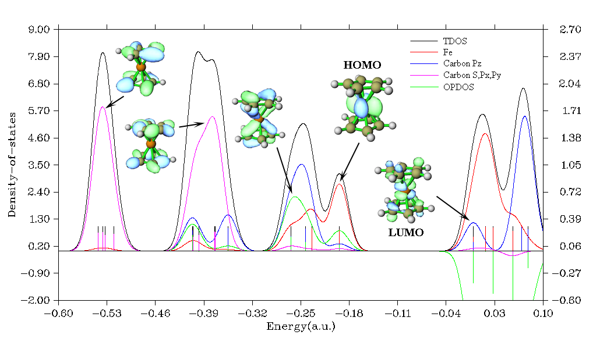

3.12 Plotting density-of-states (DOS), photoelectron spectrum (PES), and COHP (10)¶
Multiwfn manual, p.155–162. Images:
../imgs/.
Information needed: Atom coordinates, basis functions
3.12 Plotting density-of-states (DOS), photoelectron spectrum (PES), and COHP (10)¶
TDOS, PDOS and OPDOS are most frequently studied DOS types, their definitions and plotting methods in Multiwfn will be described in Sections 3.12.1, 3.12.2 and 3.12.3. The local DOS (LDOS) is a special kind of DOS, which will be introduced in Section 3.12.4. Since the TDOS is closely related to photoelectron spectra (PES), this module is also capable of plotting PES, which will be introduced in Section 3.12.5. In Section 3.12.6, crystal overlap Hamilton populations (COHP) will be introduced, which is closely related to OPDOS.
3.12.1 Theory¶
Density-of-states (DOS) is an important concept of solid physics, which represents the number of states in unit energy interval, since energy levels are contiguous, so DOS can be plotted as a curve map. In isolated system (such as molecules), the energy levels are discrete, the concept of DOS is questionable and some people argued that DOS is completely valueless in this situation. However, if the discrete energy levels are broadened to curve artificially, DOS graph can be used as a valuable tool for analyzing the nature of electron structure.
The total DOS (TDOS) of isolated systems can be written as
where {ε} is eigenvalue set of single-particle Hamilton, δ is Dirac delta function. If δ is replaced by broadening function F(x), such as Gaussian, Lorentzian and pseudo-Voigt function, we get broadened TDOS.
The normalized Gaussian function is defined as
xecxG 221)(c −= π 2 2 where 2ln22 FWHM=c
FWHM is acronym of “full width at half maximum”, it is an adjustable parameter in Multiwfn. The larger the FWHM, the smoother the TDOS graph, but the more detailed information about energy level distribution is lost.
The normalized Lorentzian function is defined as
12FWHM)(×+=xxLπ 22FWHM25.0
Pseudo-Voigt function is weighted linear combination of Gaussian function and Lorentzian function:
GaussGauss( )( )(1) ( )P xwG xwL x=+−
Obviously, if G(x) and L(x) are normalized, normalization condition for P(x) always holds
regardless of the select of \(w_{Gauss}\)
The curve map of broadened partial DOS (PDOS) and overlap DOS (OPDOS) are very valuable for visual study of orbital composition. PDOS of fragment A is defined as
\(\Theta_{i,A}\) is the composition of fragment A in orbital i. Note that the word "projected DOS" used in some papers is essentially equivalent to the partial DOS.
The OPDOS between fragment A and B is defined as
where X𝐴,𝐵 𝑖 is the composition of total cross term between fragment A and B in orbital i. I have
discussed how to calculate Θ and Χ in Section 3.10.3.
In Multiwfn, OPDOS can also be calculated between all nearest atoms. In this case, OPDOS is calculated as
where A loops over all atoms, Aadj denotes the atom in the system closest to A. 𝑛𝐴,𝐴adj 𝑖 corresponds
to overlap population between A and Aadj in orbital i.
When one or more fragments are defined by users, Multiwfn will automatically calculate center of PDOS of every fragment as follows and print it in command-line window when showing DOS map
where low and high are lower and upper limits of current X-axis (energy range), the F denotes the fragment under consideration. Via this feature, one can easily calculate d-band center, which is important in studying chemisorption on transition metal surface. See Section 4.10.6 for example.
Illustration of DOS: Ferrocene Below is a DOS map of a typical molecule ferrocene, Lanl2DZ basis set in combination with Lanl2 pseudopotential was employed for iron, while 6-31G* was employed for other elements. In this system the Z-axis is perpendicular to cyclopentadienyl groups.
The graph clearly exhibits orbital characteristics in different energy ranges, each discrete line corresponds to a MO. The curves are yielded by applying a broadening function to the discrete lines. The left and right Y-axes correspond to the curves and discrete lines, respectively. Notice that only relative height rather than absolute height of curves is meaningful. It is obvious that the major contribution from s, px and py atomic orbitals of carbon (magenta curve) is due to low-lying MOs rather than frontier MOs. The major composition of MOs around -0.25 a.u. comes from \(p_z\) orbital of carbon (blue curve) and iron atom (red curve). Inspection of the green OPDOS curve, which corresponds to the bonding between carbon pz and iron atom, suggests that carbon pz orbitals are very important for stabilization of ferrocene, since OPDOS has large positive value in these ranges. HOMO is almost purely contributed by iron orbitals, however its slight overlap with carbon pz orbitals is still beneficial to bonding. For all virtual MOs, OPDOS curve is in negative region and shows antibonding characteristic, this is due to the unfavorable overlapping in orbital phase, as can been seen from LUMO isosurface.
3.12.2 Input file¶
.mwfn/.fch/.molden/.gms files can be used as input. You can also use output file of single point task of Gaussian program as input (pop=full keyword must be specified).
For generality, Multiwfn also supports using plain text file as input file, the format is free, there is no upper limit of the number of orbitals. The format of the file should be
nmo inp
energy occ [strength] [FWHM] ← For orbital 1 energy occ [strength] [FWHM] ← For orbital 2 energy occ [strength] [FWHM] ← For orbital 3 ...
energy occ [strength] [FWHM] ← For orbital nmo where energy and occ denote orbital energy and occupation number, respectively. nmo is the number of orbitals recorded in this file. inp is input type, there are four cases:

- 1: Only energies (in a.u.) and occupation numbers will be loaded, while strengths and FWHMs of all orbitals will be automatically set to 1.0 and 0.25 a.u., respectively
- 2: The same as 1, but you also have to specify strength and FWHM for each orbital as columns 3 and 4 because in this case they will also be loaded. If the strength of an orbital is set to k, then the broadened curve from this orbital will be normalized to k rather than 1 (default value)
- 3: The same as 1, but energy unit is eV.
- 4: The same as 2, but energy unit is eV.
3.12.3 Options for plotting DOS and basic usage¶
When you enter the interface of plotting DOS, you will see following options. Notice that options -1 and 7 only appear when the input file contains basis function information, that is if you want to draw PDOS and OPDOS graph, you have to use .mwfn/.fch/.molden/.gms file as input.
Also note that in this interface, you can input s to save current status (plotting settings, fragment definition and orbital information) to a specific file, and you can input l to load status from a specific file, so that you can quickly replot a map without redoing the settings.
-6 Set shift of energy levels: In this option, orbital energies can be shifted by an inputted value. If you input H, then the shift will be set to negative of HOMO energy, so that HOMO in the DOS map corresponds to position of 0.
-5 Customize energy levels, occupations, strengths and FWHMs for specific MOs: By this option, you can manually set energies, occupations, strengths and FWHMs for specific orbitals. For example, if you would like only to plot DOS for a few MOs, you can set strengths of the other MOs to zero (by default, strengths for all MOs are 1.0).
-4 Show all orbital information: Print information of all orbitals on screen. -3 Export energy levels, strengths, FWHMs to plain text file: Export energy, strength and FWHM of each orbital to orginfo.txt in current directory, this file complies with the format introduced in last section, so can be directly used as input file.
-2 Define MO fragments for MO-PDOS: The "MO-PDOS" is a special kind of PDOS, which is used to reveal DOS contributed by different sets of MOs (rather than atoms or basis functions), the DOS curves and discrete lines corresponding to different sets of MOs are drawn using different colors. This option is used to define different sets of MOs involved in the "MO-PDOS" plot. See Section 4.10.5 for example.
-1 Define fragments for PDOS/OPDOS: You can define up to 10 fragments in this option, so that you can plot PDOS and OPDOS. After you entered this option, the information of present fragments is shown on screen. You can input x to define fragment x, and input -x to unset fragment x, or input i,j to exchange the definition of fragment i and j. To leave this interface, input 0 or q. By option 0, PDOS will be plotted for every fragment defined in this option. OPDOS can be drawn only when both fragments 1 and 2 have been defined.
It is noteworthy that, when plotting OPDOS, the defined fragment 1 and fragment 2 can share one or more basis functions, the two fragments can even have the same definition. In this case only cross terms between basis functions will be calculated, while local terms (characterizing on-site interactions) will be ignored.
0 Draw TDOS/PDOS/OPDOS graph: After selecting this option, TDOS map will be immediately shown on screen. If any fragment has been defined, TDOS+PDOS will be plotted. If both fragments 1 and 2 have been defined, TDOS+PDOS+OPDOS will be plotted, however you can also choose option -0 in this case to only plot TDOS+PDOS.
00 Draw TDOS and OPDOS between nearest atoms: This option is visible if you have not defined any fragments. After selecting it, TDOS and the OPDOSnear mentioned in Section 3.12.1 will be plotted together.
1 Select broadening function: Select which broadening function will be used, you can select Lorentzian, Gaussian or Pseudo-Voigt function. Default is Gaussian.
2 Set energy range and step: This option is used to set the lower limit, upper limit and step between labels of X-axis.
3 Set full width at half maximum (FWHM): As the title says. 4 Set scale ratio for DOS curve: If this option is set to k, then height of all curves will multiply k (in full energy range).
5 Set Gaussian-weighting coefficient: This option sets \(w_{gauss}\), which is mentioned in last section. This option only appears when Pseudo-Voigt function is chosen.
6 Choose orbital spin: This option appears only when the loaded file contains basis function information and the wavefunction is unrestricted. This option determines which set of orbitals (alpha, beta, or both alpha and beta) will be taken into account.
7 Set the method for calculating PDOS: Mulliken, SCPA, Hirshfeld and Becke methods are supported for calculating orbital compositions used in plotting PDOS, via this option you can select one of them. Hirshfeld and Becke methods are more robust than Mulliken and SCPA methods, especially for unoccupied MOs, unfortunately they are more expensive, and in this case OPDOS cannot be plotted (i.e. the fragments can only be defined as a set of atoms). It is very important to note that when diffuse functions are presented, the PDOS maps plotted based on Mulliken or SCPA methods will be meaningless! If you diffuse functions cannot be ignored due to special reasons, Hirshfeld or Becke method has to be employed.
For isolated systems, Mulliken is the default method; while for periodic systems, SCPA is the default method, because evaluation of overlap matrix for large periodic cell may be very time-consuming, and SCPA does not need overlap matrix.
8 Switch unit between a.u. and eV: You can switch the unit for X-axis of the DOS map via this option. eV is more commonly used.
9 Toggle using line height to show orbital degeneracy: If you want to show degeneracy of orbitals in the DOS map, you can choose this option to enable this effect, then you will be asked to input threshold of energy difference for determining degeneracy. This feature can be used when plotting TDOS and MO-PDOS, but cannot be utilized when plotting PDOS.
Once you choose option 0 in the DOS module, Multiwfn starts to calculate data and then DOS graph pops up. You can see there is a vertical dash line, which highlights position of HOMO level. Note that some people believe this is Fermi energy, which, however, is an ill-defined concept for
isolated systems, any energy that ≥ EHOMO and < ELUMO may be regarded as "Fermi energy".
After closing the graph, a post-processing menu appears on the screen, it contains many options, which are self-explanatory and can be used to adjust various plotting parameters. When the parameters have been changed, you can choose "1 Show graph again" to check the effect. It is noteworthy that there is an option named “Set scale factor of Y-axis range for OPDOS”, if the value is set to k and the range of left-axis (for TDOS/PDOS) is set to e.g. [-3.5, 2.0], then the range of right-axis (for OPDOS) will become [-3.5k, 2.0k]. The reason why Multiwfn uses double axis is because the magnitude of OPDOS is generally much smaller than TDOS and PDOS. You can also
choose to export the DOS map as graphical file in current folder, or export X-Y data set of DOS to plain text files so that you can reproduce the graph by third-part softwares, such as Origin. By choosing option 0 you can return to last interface, the quality of DOS graph can be gradually improved by repeating the adjustments until you are satisfied.
The absolute value of the DOS curves does not have evident practical meaning, only relative height of the curves at different energy regions is interesting. Hence, after you have properly set each plotting parameter, you can choose option "13 Toggle showing labels and ticks on Y-axis" in the post-processing menu to switch its status to "No".
Very detailed examples of plotting TDOS, PDOS and OPDOS are given in Section 4.10.1, while Section 4.10.3 illustrates how to plot DOS for open-shell systems via Multiwfn in combination with Origin software to get better effect.
3.12.4 Local DOS¶
There is a special kind of DOS named local DOS (LDOS), which is also known as spatial DOS. LDOS curve for a given point r is evaluated as follows:
It is worth to note that in some first-principles books and papers, the word "Local DOS" in fact refers to the PDOS introduced in Section 3.12.1, do not be confused!
To plot LDOS map, choose option "10 Draw local DOS for a point" after you entered main function 10, you will be prompted to input the coordinate of the point r.
One can also plot LDOS for a set of points placed evenly in a line as color-filled map, the X-axis corresponds to energy, while the Y-axis corresponds to coordinate in the line relative to starting point. To plot this kind of LDOS map, choose option "11 Draw local DOS along a line", you will be prompted to input the coordinate of starting point and end point defining the line, as well as the number of points consisting of the line.
In the DOS module, the options controlling FWHM, energy unit, energy range and scale ratio affect the resulting LDOS graphs.
Note that fragment definition does not affect the result of LDOS, i.e. the LDOS always corresponds to total DOS. However, if you want to separate angular moment contribution to LDOS, you can use subfunction 25 of main function 6 to set coefficient of unwanted GTF in all MOs to zero, then they will not contribute to LDOS.
An example of plotting LDOS can be found in Section 4.10.2.
3.12.5 Photoelectron spectrum¶
The plotting of photoelectron spectrum (PES) spectrum based on (generalized) Koopmans' theorem) is closely related to plotting TDOS. Since PES is a kind of spectrum under frequent studies, a special interface in the DOS module is provided for easily generating theoretically simulated PES spectrum.
Theory The position of the peaks in the PES spectrum reflects the energy difference between various N-1 states and the original N-electronic state. If a system is neutral, the system is usually in vibrational ground state of neutral electronic state. After ionization of an electron, the system can be in different vibrational states of the cationic state. Therefore, the PES has a fine structure, which reflects the vibration coupling effect. However, in order to simplify the problem, we often ignore the quantum effect of nuclear motion, and the ionization is assumed to be a vertical process starting from minimum point of potential energy surface of initial state. At this time, the peak positions in the PES are equivalent to the vertical ionization energy (VIP) of the electrons of different shells of present system. Clearly, as long as we optimize the system and then calculate the VIPs, we can simulate the PES.
The 1st VIP corresponds to the energy needed for ionizing out the electron of outermost shell, it is usually calculated as E(N-1) - E(N) for a system containing N electrons at minimum point geometry of potential energy surface of the N-electronic state; the E signifies electronic energy. The VIP corresponding to inner electrons can also be theoretically calculated, but special methods are needed, such as OVGF, IP-EOM-CC, ADC and so on.
The easiest way to plot PES is based on the Koopmans' theorem, which stated that the ionization energy of an electron is equal to the negative value of orbital energy of corresponding shell. Note that this is only an approximate relationship, it fully ignores the electron correlation and orbital relaxation effect. Under the Koopmans' theorem, the simulated PES simply corresponds to the TDOS curve broadened by all occupied MOs, however before the broadening the sign of orbital energies should be reversed (corresponding to "electronic binding energy").
Because of the fact that Koopmans' theorem does not work well for most popular DFT functionals (except for some special ones, such as QTP17), the negative values of MO energies deviate from actual VIP evidently, leading to poor PES compared to the experimental one. Fortunately, there is a so-called generalized Koopmans' theorem, if it is applied to theoretical simulation of PES, it essentially corresponds to adding a shift value to all electronic binding energies before PES plotting, the shift value is defined as 1st VIP + E(HOMO). After taking the shift into account, the first peak of simulated PES will exactly correspond to the 1st VIP, which does not deviate from the first peak of experimental PES evidently as long as the DFT functionals and basis set are properly chosen, the geometry has been substantially optimized, and the electronic state to be computed corresponds to actual ground state.
Usage The PES plotting interface is embedded in the DOS module as option 12, it allows the user to extremely easily plot PES spectrum based on (generalized) Koopmans' theorem. Any kind of input files that are used for plotting DOS can also be employed for PES plotting purposes.
If you want to plot the PES based on Koopmans' theorem, simply select option 1 after entering the PES plotting interface. If you want to adopt generalized Koopmans' theorem, you should choose option 3 to set a shift value before plotting.
There are many parameters and options in the PES plotting interface similar to those in the DOS plotting interface, such as range and step of X and Y axes, FWHM, if showing discrete lines and so on, however most parameters are not shared by the two interfaces. Note that only eV unit and Gaussian broadening function can be employed for PES plotting. If present wavefunction is an unrestricted open-shell one, the type of orbital spin is not distinguished.
If you want to adjust relative height between the PES curve and the discrete lines corresponding to various binding energy levels, you can use "11 Set scale ratio for PES curve" to set a scale ratio. The smaller the ratio, the lower the curve.
If nothing is shown after choosing option 1 to plot the PES spectrum, you should: - Select option "-2 Show all binding energy level information" and then check if values of binding energies are correct. - Check if range of X-axis has been properly set. To plot PES, there must be at least one binding energy that occurs within the current range of X-axis. By default, all orbitals have identical strength (1.0) and FWHM (0.2 eV), the latter can be directly set in the PES interface via option 6. If you want to adjust strength and FWHM for individual orbitals, you can select "-3 Export occupied MO energies, strengths and FWHMs to plain text file", then a file PESinfo.txt in a format as described in Section 3.12.2 will be exported to current folder. You can then manually adjust strengths and FWHMs of certain orbitals in this file, and then use this file as input file to plot PES, so that the simulated PES could be closer to the experimental one.
The absolute value of the PES curve does not have practical meaning. Hence, after you have properly set the range of Y-axis, you can choose "13 Toggle showing labels and ticks on Y-axis" to switch its status to "No".
An example of plotting PES is given in Section 4.10.4. Information needed: For PDOS, OPDOS and local DOS, see Section 3.12.2. For TDOS and PES spectrum, use .mwfn/.fch/.molden/.gms file, or Gaussian output file with pop=full, or plain text file in a format as described in Section 3.12.2.
3.12.6 COHP¶
Theory In the field of first-principles research, OPDOS is often referred to as crystal orbital overlap population (COOP), and there is a concept closely related to it named crystal overlap Hamilton populations (COHP). COHP was originally proposed in J. Phys. Chem., 97, 8617 (1993), and has wide applications in understanding bonding in solids and material design, see J. Phys. Chem. A, 115, 5461 (2011) and Angew. Chem. Int. Ed., 39, 1560 (2000) for review.
For wavefunctions represented by atomic-centered basis functions, like those produced by Gaussian and CP2K, COHP can be regarded as simply replacing the overlap matrix in COOP with Kohn-Sham matrix, so COHP is related to interactions between atoms or fragments from the energy perspective. Each MO has its COOP and COHP value for the interaction of interest, both positive COOP and negative COHP suggest that the MO has positive contribution to the interatomic or interfragment bonding when it is occupied (i.e. bonding state), and the more positive the COOP and the more negative the COHP, the larger the contribution. In contrast, MO of antibonding state has negative COOP and positive COHP. COHP may correlate better than COOP with the interatomic/interfragment bonding strength as it takes energy factor into account. However, I found COHP curve is somewhat sensitive to the basis set used. So, when comparing COHP between different cases, exactly the same basis set should be used.